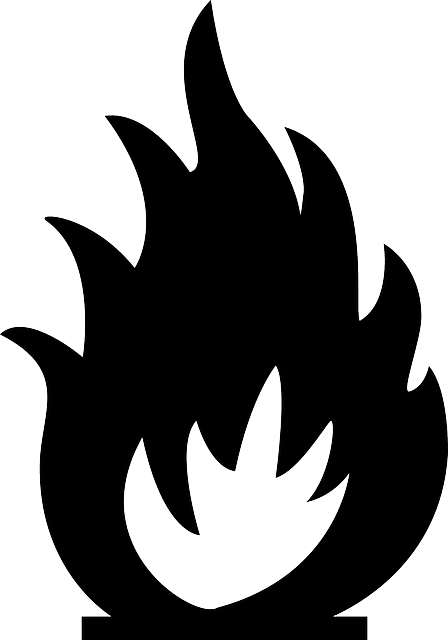

제주 4•3 전개
-
“제주 4•3의 도화선”
1947년 3월 1일, ‘제28주년 3·1절 기념 제주도대회’가 제주시 북국민학교에서 열렸다.
오후 2시에 식이 끝나자 곧바로 가두시위가 벌어졌다. 집회가 끝난 뒤 시위대가 관덕정 서쪽으로 빠져나갈 즈음 기마경찰의 말발굽에 어린아이가 치어 다치는 사태가 발생했다. 기마경관이 어린이가 채인 사실을 몰랐는지 그대로 가려고 하자 주변에 있던 3만여 군중들이 몰려들어 기마경관에게 돌을 던지며 항의했다. 그런데 경찰이 이를 경찰서 습격으로 오인하여 시위대에게 발포해 6명이 사망하고 6~8명이 부상을 입었다. -
“전도민이 참가한 항의 총파업”
3·1절 발포사건은 제주도 전체의 총파업으로 이어졌다. 1947년 3월 10일에 시작하여 22일까지 학생들은 등교를 거부했고, 제주도청 공무원들은 제주도 행정을 위한 일을 멈추어버렸다. 물건을 사고파는 시장도 장사를 그만 두었고 작은 가게도 대부분 문을 닫아버린다. 이에 미군정 경찰은 제주도를 ‘빨갱이 섬’으로 규정하고 마구잡이로 사람들을 잡아들이기 시작했다. 3·1대회 참가자들은 검속 한 달만에 500명이 체포되었고 수형자는 245명에 다다랐다.
-
“서북청년회”
1947년 3·1사건 이후 미군정의 지시를 받아 북을 고향으로 둔 ‘서북청년회’와 타 지역 사람으로 구성된 응원경찰대가 대거 들어오게 된다. 경찰직함은 주어졌으나 급료를 받지 못한 서북청년회는 제주도민을 상대로 약탈하게 되고, 북한에서 토지 개혁과 친일청산 등의 정치적 변화에 내몰려 좌익에 대한 반감이 큰 이들은 제주도민을 죽이는 것에 죄책감을 가지지 않았다.
-
“1948년 4월 3일”
남쪽만의 단독 선거인 5·10선거를 한 달 가량 앞둔 시점, 남쪽의 단독 선거는 사태를 더욱 불안한 쪽으로 몰고 갔다. 남과 북의 분단이 한반도에 전쟁을 초래할 수 있기 때문이다. 이에 남의 단독 선거를 한 달 앞둔 시점에서 경찰지서 습격 사건이 발생한다.
4•3
-

“4.28 평화 협상과 오라리 방화사건”
미군정 경찰은 4·3을 ‘북한과 연계된 공산주의자들의 난동’이라고 선전했다. 4월 말쯤에 이르자 미군정은 군부대에도 4·3 진압의 명령을 내렸다. 그러나 당시 제주주둔군 9연 대의 연대장 김익렬 중령은 사태를 평화적으로 풀어가려고 했고, 4·3이 시작 된 지 한 달이 지나지 않은 4월 28일에 무장대 측과의 협상 테이블을 마련한다.
4월 28일, 9연대장 김익렬 중령과 무장대 사령관 김달삼(본명 이승진)은 성공적으로 협상을 끝내게 된다. 72시간 내에 전투 중지와 점진적 무장해제 그리고 무장대에 대한 사실상의 신변 보장이 합의 내용이었다. 그러나 5월 1일 제주시 오라동 연미 마을에 무장대를 가장한 괴청년들이 불을 지르고 난동을 피우는 것을 미군정은 하늘과 땅에서 입체적으로 촬영하고 평화협상을 깨뜨리기 위해 「제주도의 메이데이(Cheju-Do May Day)」라는 선전용 기록영화를 만들었다. -
“5•10선거 거부”
남쪽만의 선거는 한반도 전체 정치 상황으로 볼 때 전쟁의 위험성이 있어서 긍정적이지 못하다고 판단한 사람들은 이 선거를 반대하고 거부했다. 그런 만큼 제주도에서는 5월 10일 선거가 제대로 진행되지 않았다. 3명의 국회의원을 뽑는데 단 1명만 뽑혔다. 나머지 2개의 선거구에서는 많은 주민들이 투표를 거부한 것이다.
5•10
-
“1948년 광기의 시대”
1948년 8월 15일에 대한민국 정부가 탄생하게 된다. 초대 대통령인 이승만은 정부를 수립한 후 자신의 정통성에 걸림돌이 되는 요소들을 하루빨리 제거하려고 했다. 남쪽만의 선거 반대를 외쳤던 제주도가 이승만 대통령 입장에서는 불편한 존재로 인식될 수밖에 없었다. 마찬가지로 미군정은 1948년 말까지 한반도에서 떠나기로 돼있어 군대 철수 이전에 한반도의 상황을 정리하려고 했다. 불행히도 그들이 선택한 방법은 평화가 아닌 섬멸이었다.
1948년 10월 17일 강력한 토벌이 시작됐다. 이날 제주지역 토벌 사령관인 9연대장 송요찬은 “해안선에서 5km 이상 지역은 적성구역으로 간주하고 그곳에 출입하는 사람들은 무조건 사살하겠다.”라는 포고령을 내렸다. 같은 해 11월 17일에는 계엄령이 내려졌다. 중산간 마을은 대부분 불살라버렸고, 그 지역을 떠나지 못하는 사람들은 그대로 사살해 버렸다. 여성이나 어린이, 노약자라고 예외는 아니었다. 산으로 올라간 사람들도 민간인을 대상으로 하는 무절제한 약탈을 시작했다. 식량보급이 끊기고 토벌대가 그 지역 사람을 길잡이로 삼아 토벌에 나서면 그 본인과 가족에 대한 잔인한 보복이 이어졌다. 산부대에 의한 피해가 가장 많았던 시기였다. 양민들은 ‘산도 무섭고 군·경도 무서운’ 생활을 하게 되었고 그들을 ‘폭도’라 부르기 시작했다. 이러한 참담한 상황은 다음 해인 1949년 봄까지 지속된다.
출처 : 4•3이 머우꽈(자료집)